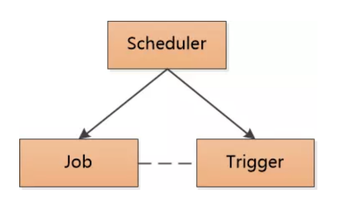

crontab
Linux的crontab是系统自带的实现定时任务的模块，后台以守护进程的形式被systemd管理。crontab根据crontab表达式来配置一个定时任务，标准unix版本的crontab表达式是一个空格分割的5段字符串：分 时 日 月 星（分钟，小时，某日，某月，某年），一些其他的版本可能有7段：秒 分 时 日 月 星 年，此处以5段式表达式为准。
基本用法：crontab [-u user] { -l | -r | -e }。root权限下-u可以指定他人的时程，不填默认设置自己的时程。
-e: 编辑器来设定时程表-r: 删除目前的时程表-l: 列出目前的时程表
crontab表达式：分 时 日 月 星 每一位取一个数字的时候，表示某一具体时间，各个域的取值范围为：
- 分（Minute）：[0,59]的整数
- 时（Hour）：[0,23]的整数
- 日（DayOfMonth）：[0,31]的整数
- 月（Month）:[1,12]的整数
- 星（DayOfWeek）：[1,7]的整数（1是星期天，2是星期一）
实际使用过程中可能因为操作系统版本不同导致取值范围不同，有的月份从0开始计数。为了屏蔽平台差异，建议使用：”JAN”,…,”DEC”等英文缩写表示月份，使用”SUN”,…,”SAT”表示星期几
除了给每个域声明具体的值，还可以用以下四种字符表示多个时间点：
,：代表枚举，可以表示域内多个时间点*：代表每一，匹配域内任意值-：代表域内一个闭区间的连续取值n/m：代表步长，从n开始取值，每次步长m，取遍域内所有合法的值nL：表示最后，如DayOfWeek域使用5L,意味着在最后的一个星期四触发W：表示有效工作日(周一到周五),只能出现在DayofMonth域。例如：在 DayofMonth使用5W：如果5日是星期六，则将在最近的工作日：星期五，即4日触发。如果5日是星期天，则在6日(周一)触发；如果5日在星期一到星期五中的一天，则就在5日触发。另外一点，W的最近寻找不会跨过月份LW：表示在某个月最后一个工作日（某月最后一个周五）#：用于确定每个月第几个星期几，只能出现在DayofMonth域。例如在4#2，表示某月的第二个星期三。?：只能用在DayofMonth和DayofWeek两个域，用于协调配置的冲突
例：
11 4 5 1 ?：1月5日04:11执行11 * 4 5 ?：1月5日每小时11分执行* * * * *：每分钟执行11/4 5 1 4 ?：4月1日05:11，05:15，05:19，….，05:59执行11,4 5 1 4 ?：4月1日05:04，05:11执行0 12 ? * WED：每个星期三中午12点
以ubuntu为例子，crontab -l查看当前定时任务配置：# For example, you can run a backup of all your user accounts
# at 5 a.m every week with:
# 0 5 * * 1 tar -zcf /var/backups/home.tgz /home/
#
# For more information see the manual pages of crontab(5) and cron(8)
#
# m h dom mon dow command
看到m h dom mon dow说明只支持标准的5段crontab表达式，表达式后直接写命令。写一个“每日凌晨删除十天前日志文件”的定时任务，crontab -e，选择一个编辑器，在末尾写入：0 0 * * * find /var/log -ctime +10 -print0 | xargs -0 rm，保存退出后显示crontab: installing new crontab说明新的定时任务开始配置。如果想立刻启动新的定时任务，可以直接重启cron服务：sudo systemctl restart cron。
如果定时任务需要设置用户的环境变量，可以* * * * * . /etc/profile; /usr/bin/bash script.sh。如果定时任务需要root权限，可以用root用户设置root的时程：sudo crontab -u root -e
Timer
Timer是JDK自带的定时任务类，需要配合TimerTask一起使用。一个简单的定时任务Demo如下：
public static void main(String[] args) { |
每个TimerTask中实现Runnable接口，然后由Timer对象使用schedule()方法将任务加入定时任务队列，这里指定timerTask和timerTask2在1s后开始执行，每隔1s执行一次。执行的控制台结果如下：main thread id = 1
Timer ready to schedule, time = Wed Apr 14 14:36:54 CST 2021
Timer doesn't block main thread, time = Wed Apr 14 14:36:54 CST 2021
Task1 start, time = Wed Apr 14 14:36:55 CST 2021, thread id = 12
Task2 start, time = Wed Apr 14 14:36:55 CST 2021, thread id = 12
Task2 start, time = Wed Apr 14 14:36:56 CST 2021, thread id = 12
Task1 start, time = Wed Apr 14 14:36:56 CST 2021, thread id = 12
Task1 start, time = Wed Apr 14 14:36:57 CST 2021, thread id = 12
Task2 start, time = Wed Apr 14 14:36:57 CST 2021, thread id = 12
Task2 start, time = Wed Apr 14 14:36:58 CST 2021, thread id = 12
Task1 start, time = Wed Apr 14 14:36:58 CST 2021, thread id = 12
Task1 start, time = Wed Apr 14 14:36:59 CST 2021, thread id = 12
Task2 start, time = Wed Apr 14 14:36:59 CST 2021, thread id = 12
由于每个任务都打印出了线程号和开始时间，可以看到每个TimerTask任务按照我们的预期的设定，严格按照每1s执行一次的设定。其中main函数线程ID是1，而同一个Timer调度的TimerTask的线程ID都是12。
这是因为Timer本身是一个单线程的调度器，每个Timer对象中维护一个继承自Thread的TimerThread类的对象，和一个TimerTask类型的队列。当Timer被实例化，该线程就启动了，他将检查Timer中的TimerTask队列中的时间和当前系统时间，定时执行run()方法中的业务逻辑。而Timer的schedule()方法只是设置TimerTask的执行时间间隔和开始执行时间，讲TimerTask对象加入Timer中的任务队列，该方法不会阻塞线程。
以上案例是Timer在比较理想的情况下的表现，当一个TimerTask执行的时间较长，由于Timer只维护了一个TimerThread线程，执行时间较长的TimerTask会阻塞其他的TimerTask，造成每个TimerTask执行的间隔时间与预期不一致：
public static void main(String[] args) { |
让TimerTask1执行时间达到3s，TimerTask2执行时间达到4s，依旧设置每1s执行一次，输出如下：main thread id = 1
Timer ready to schedule, time = Wed Apr 14 15:31:15 CST 2021
Timer doesn't block main thread, time = Wed Apr 14 15:31:15 CST 2021
Task1 start, time = Wed Apr 14 15:31:16 CST 2021, thread id = 12
Task1 finished, time = Wed Apr 14 15:31:20 CST 2021, thread id = 12
Task2 start, time = Wed Apr 14 15:31:20 CST 2021, thread id = 12
Task2 finished, time = Wed Apr 14 15:31:23 CST 2021, thread id = 12
Task1 start, time = Wed Apr 14 15:31:23 CST 2021, thread id = 12
Task1 finished, time = Wed Apr 14 15:31:27 CST 2021, thread id = 12
Task2 start, time = Wed Apr 14 15:31:27 CST 2021, thread id = 12
可以观察到TimerTask1执行间隔时间达到了7s。
如果某个TimerTask执行的过程中抛出了异常，还会干扰其他任务的执行,这里再TimerTask1里除0模拟抛出异常：public static void main(String[] args) {
System.out.println("main thread id = " + Thread.currentThread().getId());
Timer timer = new Timer();
TimerTask timerTask1 = new TimerTask() {
public void run() {
//implement your code here
System.out.printf("Task1 start, time = %s, thread id = %s \n", new Date().toString(), Thread.currentThread().getId());
//Exception here!
try {
TimeUnit.SECONDS.sleep(4);
} catch (InterruptedException e) {
e.printStackTrace();
}
System.out.println(6/0);
System.out.printf("Task1 finished, time = %s, thread id = %s \n", new Date().toString(), Thread.currentThread().getId());
}
};
TimerTask timerTask2 = new TimerTask() {
public void run() {
//implement your code here
System.out.printf("Task2 start, time = %s, thread id = %s \n", new Date().toString(), Thread.currentThread().getId());
try {
TimeUnit.SECONDS.sleep(3);
} catch (InterruptedException e) {
e.printStackTrace();
}
System.out.printf("Task2 finished, time = %s, thread id = %s \n", new Date().toString(), Thread.currentThread().getId());
}
};
System.out.printf("Timer ready to schedule, time = %s \n",new Date().toString());
timer.schedule(timerTask1,1000,1000);
timer.schedule(timerTask2,1000,1000);
System.out.printf("Timer doesn't block main thread, time = %s \n", new Date().toString());
}
这次执行直接报错退出了：main thread id = 1
Timer ready to schedule, time = Wed Apr 14 15:37:36 CST 2021
Timer doesn't block main thread, time = Wed Apr 14 15:37:36 CST 2021
Task1 start, time = Wed Apr 14 15:37:37 CST 2021, thread id = 12
Exception in thread "Timer-0" java.lang.ArithmeticException: / by zero
at TestTimer$1.run(TimerTest.java:15)
at java.util.TimerThread.mainLoop(Timer.java:555)
at java.util.TimerThread.run(Timer.java:505)
由于TimerTask抛出异常会直接把所有参与调度的任务一起拖死，再编程的时候必须对run()方法内的代码try，catch。
总结：使用Timer处理定时任务实现简单，但是存在以下问题：
- 任务执行时间长影响其他任务
- 任务异常影响其他任务
ScheduledExecutorService
ScheduledExecutorService再JDK1.5后引入，可以替代Timer的功能，并解决了Timer面对的一切问题。
直接测试Timer存在的问题的例子，由三个任务，每个任务都需要运行4s，运行间隔分别为3s，4s，5s：public static void main(String[] args) {
System.out.println("main thread id = " + Thread.currentThread().getId());
ScheduledExecutorService scheduledExecutorService = Executors.newScheduledThreadPool(10);
scheduledExecutorService.scheduleAtFixedRate(() -> {
//implement your code here
System.out.printf("Task1 start, time = %s, thread id = %s \n", new Date().toString(), Thread.currentThread().getId());
try {
TimeUnit.SECONDS.sleep(4);
} catch (InterruptedException e) {
e.printStackTrace();
}
System.out.println(6/0);
System.out.printf("Task1 finished, time = %s, thread id = %s \n", new Date().toString(), Thread.currentThread().getId());
}, 1, 3, TimeUnit.SECONDS); //delay 1s, period 3s
scheduledExecutorService.scheduleAtFixedRate(() -> {
//implement your code here
System.out.printf("Task2 start, time = %s, thread id = %s \n", new Date().toString(), Thread.currentThread().getId());
try {
TimeUnit.SECONDS.sleep(4);
} catch (InterruptedException e) {
e.printStackTrace();
}
System.out.printf("Task2 finished, time = %s, thread id = %s \n", new Date().toString(), Thread.currentThread().getId());
}, 1, 4, TimeUnit.SECONDS); //delay 1s, period 4s
scheduledExecutorService.scheduleAtFixedRate(() -> {
//implement your code here
System.out.printf("Task3 start, time = %s, thread id = %s \n", new Date().toString(), Thread.currentThread().getId());
try {
TimeUnit.SECONDS.sleep(4);
} catch (InterruptedException e) {
e.printStackTrace();
}
System.out.printf("Task3 finished, time = %s, thread id = %s \n", new Date().toString(), Thread.currentThread().getId());
}, 1, 5, TimeUnit.SECONDS); //delay 1s, period 5s
}
控制台结果如下：main thread id = 1
Task1 start, time = Wed Apr 14 16:05:05 CST 2021, thread id = 12
Task3 start, time = Wed Apr 14 16:05:05 CST 2021, thread id = 14
Task2 start, time = Wed Apr 14 16:05:05 CST 2021, thread id = 13
Task3 finished, time = Wed Apr 14 16:05:09 CST 2021, thread id = 14
Task2 finished, time = Wed Apr 14 16:05:09 CST 2021, thread id = 13
Task2 start, time = Wed Apr 14 16:05:09 CST 2021, thread id = 12
Task3 start, time = Wed Apr 14 16:05:10 CST 2021, thread id = 14
Task2 finished, time = Wed Apr 14 16:05:13 CST 2021, thread id = 12
Task2 start, time = Wed Apr 14 16:05:13 CST 2021, thread id = 13
Task3 finished, time = Wed Apr 14 16:05:14 CST 2021, thread id = 14
Task3 start, time = Wed Apr 14 16:05:15 CST 2021, thread id = 16
Task2 finished, time = Wed Apr 14 16:05:17 CST 2021, thread id = 13
Task2 start, time = Wed Apr 14 16:05:17 CST 2021, thread id = 17
Task3 finished, time = Wed Apr 14 16:05:19 CST 2021, thread id = 16
Task3 start, time = Wed Apr 14 16:05:20 CST 2021, thread id = 12
Task2 finished, time = Wed Apr 14 16:05:21 CST 2021, thread id = 17
Task2 start, time = Wed Apr 14 16:05:21 CST 2021, thread id = 18
Task3 finished, time = Wed Apr 14 16:05:24 CST 2021, thread id = 12
Task3 start, time = Wed Apr 14 16:05:25 CST 2021, thread id = 12
Task2 finished, time = Wed Apr 14 16:05:25 CST 2021, thread id = 18
Task2 start, time = Wed Apr 14 16:05:25 CST 2021, thread id = 18
Task3 finished, time = Wed Apr 14 16:05:29 CST 2021, thread id = 12
Task2 finished, time = Wed Apr 14 16:05:29 CST 2021, thread id = 18
可以看出Task2严格按照设定的4s一次的速率被执行，Task3严格按照5s一次的速率执行，尽管执行时间达到了4s也没有干涉到其他任务。Task1中发生了除0异常，直接退出了，没有在后续任务中出现，也没有影响到Task2和Task3的后续执行。
观察可以看出每次调度一个Task线程ID都在变化，这是因为ScheduledExecutorService维护了一个线程池。
总结：ScheduledExecutorService通过维护一个线程池，使得调度的任务之间相互不影响，可以完全取代Timer。
SpringTask
如果业务用到了Spring，可以直接用Spring提供的SpringTask实现定时任务。只需要在启动类上加上@EnableScheduling注解即可，添加定时任务时给方法加上@Scheduled注解即可： // must be declared!!!
public class TaskDemo {
//execute per sec
public void runTask(){
System.out.println("Task Start");
}
}
@Scheduled中用6分段crontab表达式（秒 分 时 日 月 星）描述执行时间
Quartz
Quartz是Java一个比较成熟的定时任务框架，他提供了额外的作业调度管理。
首先引入Maven依赖：<!-- https://mvnrepository.com/artifact/org.quartz-scheduler/quartz -->
<dependency>
<groupId>org.quartz-scheduler</groupId>
<artifactId>quartz</artifactId>
<version>2.3.0</version>
</dependency>
Quartz执行定时任务主要涉及三个类/接口：
JobSchedulerTrigger
其中Job是一个接口，业务逻辑实现在Job的execute()中，每个定时任务对应一个Job。Trigger也是一个接口，用于定义任务的触发时间，Tigger有多个默认实现：SimpleTrigger、CronTigger等。Scheduler是一个调度器接口，也提供了多个默认实现。Scheduler用于把Job和Trigger结合起来参与调度：

以下是一个具体例子：首先实现两个Job，Job1、Job2，实现Job接口。Job2中模拟了除0异常。JobExecutionContext中包含了Quartz运行时的环境以及Job本身的详细数据信息。
当Schedule调度执行一个Job的时候，就会将JobExecutionContext传递给该Job的execute()中，Job就可以通过JobExecutionContext对象获取信息。
public class Job1 implements Job { |
Job2是一个会出现异常的任务：
public class Job2 implements Job { |
main函数中用StdSchedulerFactory创建一个StdScheduler。每个Job需要用JobDetail实例化并绑定，JobDetail给Job提供了额外属性：name，group。Job和JobDetail分离的设计使得每次Scheduler执行都会创建一个新的Job实例，防止了对Job的并发访问。每个Trigger也可以设置name和group，tigger1用SimpleTigger实现，tigger2使用CronTrigger实现，支持7段式（秒 分 时 日 月 星 年）的crontab表达式。
public static void main(String[] args) throws SchedulerException, InterruptedException { |
控制台输出如下：--------scheduler start ! ------------
scheduler.start() won't block this thread!
Job1 start, time = Thu Apr 15 10:34:49 CST 2021, thread id = 12
Job2 start, time = Thu Apr 15 10:34:49 CST 2021, thread id = 13
Job1 start, time = Thu Apr 15 10:34:50 CST 2021, thread id = 14
Job2 start, time = Thu Apr 15 10:34:50 CST 2021, thread id = 15
Job1 start, time = Thu Apr 15 10:34:51 CST 2021, thread id = 16
Job2 start, time = Thu Apr 15 10:34:51 CST 2021, thread id = 17
Job1 start, time = Thu Apr 15 10:34:52 CST 2021, thread id = 18
Job2 start, time = Thu Apr 15 10:34:52 CST 2021, thread id = 19
Job1 finished, time = Thu Apr 15 10:34:52 CST 2021, thread id = 12
Job1 start, time = Thu Apr 15 10:34:53 CST 2021, thread id = 20
Job1 finished, time = Thu Apr 15 10:34:53 CST 2021, thread id = 14
Job2 start, time = Thu Apr 15 10:34:53 CST 2021, thread id = 21
Job1 finished, time = Thu Apr 15 10:34:54 CST 2021, thread id = 16
Job1 start, time = Thu Apr 15 10:34:54 CST 2021, thread id = 13
Job2 start, time = Thu Apr 15 10:34:54 CST 2021, thread id = 15
--------scheduler shutdown ! ------------
Job1 finished, time = Thu Apr 15 10:34:55 CST 2021, thread id = 18
Job1 finished, time = Thu Apr 15 10:34:56 CST 2021, thread id = 20
Job1 finished, time = Thu Apr 15 10:34:57 CST 2021, thread id = 13
Process finished with exit code 0
可以看出Quartz实现的定时任务，每个任务会严格按照设置的时间执行，不会因为执行时间超时或异常影响其他任务。每次执行任务的线程ID各不相同，说明Scheduler也是基于线程池设计的，维护QuartzSchedulerThread，使各个任务线程相互独立。当某个任务抛出异常，还会被再次执行。scheduler.start()不会阻塞主线程，需要用scheduler.shutdown()停止调度。当请求停止调度后，主线程会等待当前在执行的所有任务完成后再退出。
需要保证每个Trigger只能对应一个任务，QuartzScheduler会检查JobDetail和Trigger的key：if (trigger.getJobKey() == null) {
trig.setJobKey(jobDetail.getKey());
} else if (!trigger.getJobKey().equals(jobDetail.getKey())) {
throw new SchedulerException("Trigger does not reference given job!");
}
如果一样，会跑出”Trigger does not reference given job!”错误。
总结：Quartz是一个比较完美的定时任务框架，需要额外引入依赖。如果对业务稳定有较高要求，可以用Quartz。
Redis
上面的方法都是关于单机定时任务的实现，如果是以下场景：
- 给新注册的用户一周后发送一封邮件
- 给火车票在发车后检查车票状态
这些业务的数据量巨大，给每个任务都在内存中设置定时器不现实，而且一旦定时任务模块退出还会丢失定时信息。这种情况下可以使用Redis来实现分布式系统定时任务，将Trigger和Job分开。使用Redis实现延迟任务的方法大体可分为两类：通过ZSet的方式和键空间通知的方式。
添加Maven的Redis依赖：<dependency>
<groupId>redis.clients</groupId>
<artifactId>jedis</artifactId>
<version>2.7.1</version>
</dependency>
- ZSet实现方式
通过ZSet实现定时任务的思路是，将定时任务存放到ZSet集合中，并且将过期时间存储到ZSet的Score字段中，然后通过一个无限循环来判断当前时间内是否有需要执行的定时任务，如果有则进行执行，具体实现代码如下：输出如下：public class RedisScheduleDemo {
// zset key
private static final String _KEY = "redisTask";
private final static Jedis jedis = new Jedis("localhost",6379);
public static void main(String[] args) throws InterruptedException {
jedis.zadd(_KEY, Instant.now().plusSeconds(11).getEpochSecond(), "function1");
jedis.zadd(_KEY, Instant.now().plusSeconds(45).getEpochSecond(), "function2");
jedis.zadd(_KEY, Instant.now().plusSeconds(14).getEpochSecond(), "function2");
System.out.println("current time is " + new Date());
doDelayQueue(jedis);
}
public static void doDelayQueue(Jedis jedis) throws InterruptedException {
while (true) {
Instant nowInstant = Instant.now();
long lastSecond = nowInstant.plusSeconds(-1).getEpochSecond(); // 上一秒时间
long nowSecond = nowInstant.getEpochSecond();
Set<String> data = jedis.zrangeByScore(_KEY, lastSecond, nowSecond);
for (String item: data) {
//consume data, and start a task
new Thread(()->{
System.out.println("start a task, invoke function [" + item + "] at " + new Date());
}).start();
}
// remove task
jedis.zremrangeByScore(_KEY, lastSecond, nowSecond);
TimeUnit.SECONDS.sleep(1);
}
}
}定时任务创建服务和定时任务执行服务可以彼此成为独立的进程，使用Redis通信。创建者只需要把定时任务写入Redis，执行者轮询消费Zset中的数据，并创建任务。current time is Fri Apr 16 13:58:40 CST 2021
start a task, invoke function [function1] at Fri Apr 16 13:58:51 CST 2021
start a task, invoke function [function3] at Fri Apr 16 13:58:54 CST 2021
start a task, invoke function [function2] at Fri Apr 16 13:59:25 CST 2021
- 键空间通知
我们可以通过Redis的键空间通知来实现定时任务，它的实现思路是给所有的定时任务设置一个过期时间，等到了过期之后，我们通过订阅过期消息就能感知到定时任务需要被执行了，此时我们执行定时任务即可。
默认情况下Redis是不开启键空间通知的，需要我们通过config set notify-keyspace-events Ex的命令手动开启，
或者取消redis.conf中notify-keyspace-events Ex的注解后重启Redis。# Example 2: to get the stream of the expired keys subscribing to channel
# name __keyevent@0__:expired use:
#
notify-keyspace-events Ex
开启之后定时任务的代码如下：public class RedisKeyExpireScheduleDemo {
public static final String _TOPIC = "__keyevent@0__:expired";
private final static Jedis jedis = new Jedis("localhost",6379);
public static void main(String[] args) {
// 订阅过期消息
jedis.psubscribe(new JedisPubSub() {
public void onPMessage(String pattern, String channel, String message) {
System.out.println("invoke function [" + message + "] at " + new Date());
}
}, _TOPIC);
}
}
Redis中输入set function1 0，expire function1 10，就创建了一个10秒后执行function1的任务。
控制台输出如下：invoke function [function1] at Fri Apr 16 14:15:12 CST 2021
参考资料：